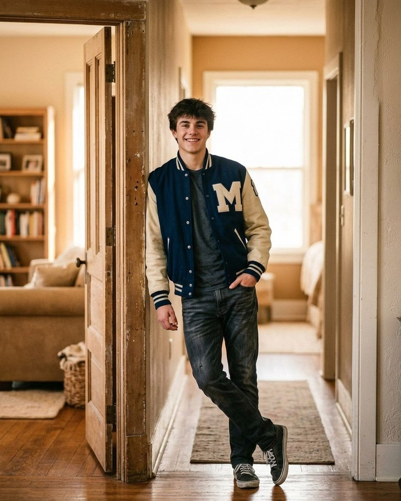
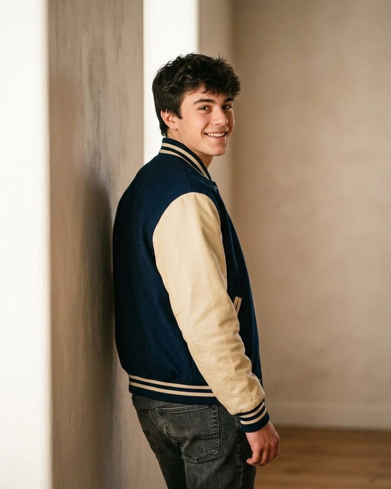
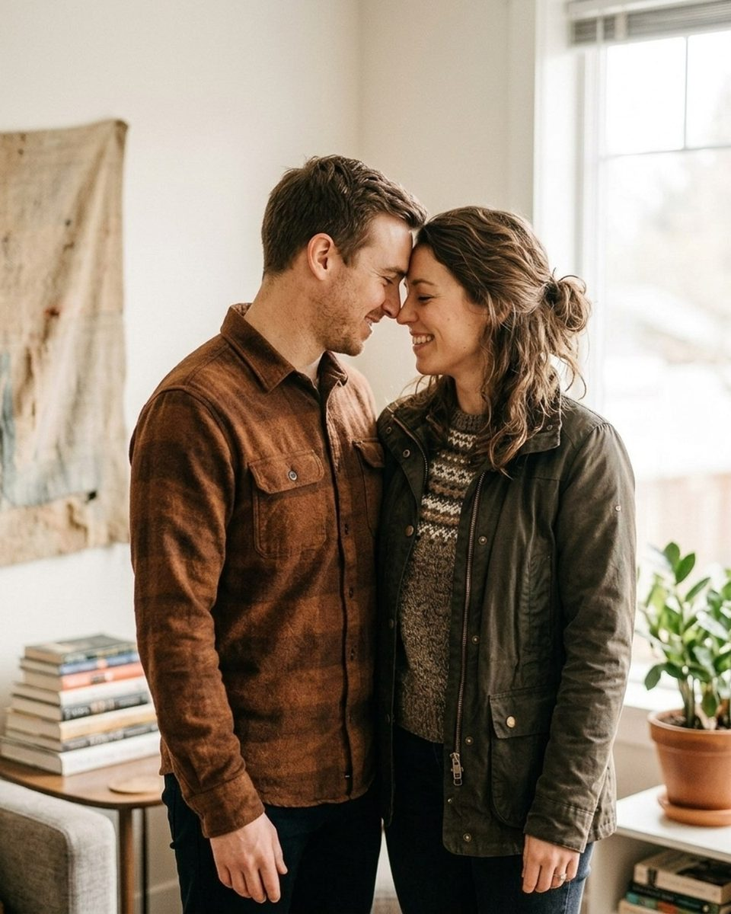
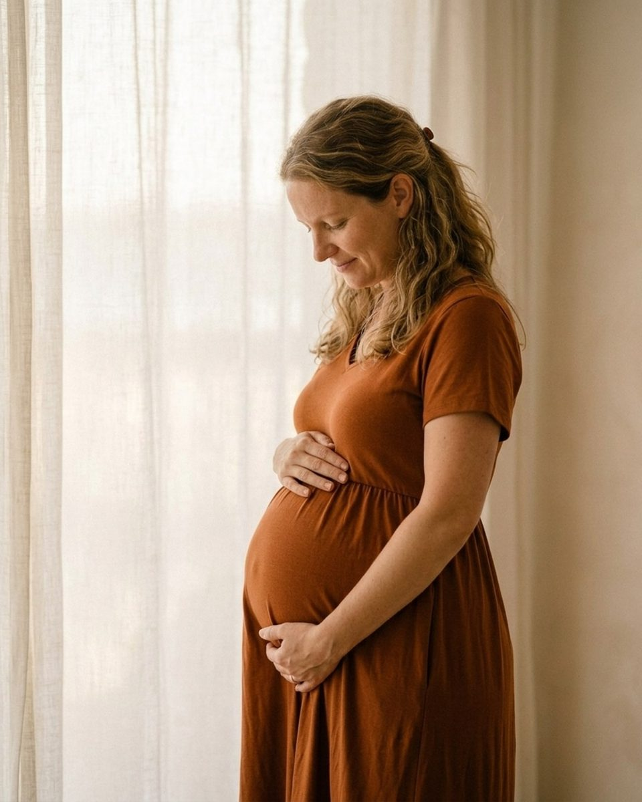

Window light indoors: poses and prompts for one good window
Nineteen prompts from the Prompted catalog for a room with one window, plus how far from the glass to stand and which way to face it.
Every room has one good window, and most photographers find it by accident ten minutes before the session ends. Window light is the only light source that behaves like studio gear you did not have to buy: it is large, it is soft at close range, it falls off fast enough to give you a background, and it sits in a fixed position so you can learn it in one visit. What it is not is abundant. The usable area in front of one window is smaller than people expect, often no more than six or eight feet, and that constraint is what makes indoor sessions feel cramped. It is also what makes them good: once you commit to one window, there is exactly one decision left, which is where the subject stands relative to it. Everything below is quoted word for word from the Prompted catalog, with the pose it belongs to and how to use it in a room with one window. Indoor window light is one of the conditions the app filters on, so you can pull the same set up on the drive over. The reference images are AI-generated posing references and are labelled as such, apart from the in-home frame further down, which is a real photograph; more are being added through the contributor program.

One window is a light source, not a limitation
Start by working out which way the window faces, because it decides your whole afternoon. North-facing glass gives you soft, cool, unchanging light all day, which is the easiest light there is to shoot. South-facing glass swings from direct and contrasty to soft and back again, so it is either your best window or your worst depending on the hour. East and west windows are direct for half the day and gentle for the rest. A sheer curtain turns any of them into the soft option at the cost of about a stop and a half, and a white bedsheet taped across the frame does the same job if the house has blinds instead.
Then use distance, which is the control nobody reaches for. Light from a window falls off according to the inverse square law, which in practice means the difference between standing a foot from the glass and standing four feet back is dramatic. Close to the window the light is soft and wrapping and the background goes dark fast, giving you separation without a backdrop. Further back the light is harder and flatter and the room fills in evenly. Neither is correct. Move the subject, look, and move them again.
The last thing is angle. Put the subject facing the window square-on for even, open light that hides texture and reads young. Turn them ninety degrees for a hard split down the nose, which almost nobody wants. Forty-five degrees is where most faces live: a defined cheekbone, a triangle of light under the far eye, and a shadow side that still holds detail.
Turn toward the window until the light warms your cheek.
CalmFrom the pose “Mirror reflection studio”
Say it when you need a face turned a precise amount and do not want to hand-place a stranger. Warming the cheek is the actual instruction: the subject stops rotating at the point where they feel the light, which is close enough to forty-five degrees every time.
Lean back on the wall and let it hold all your weight.
CalmFrom the pose “Profile look away studio”
Use it for the wall next to the window rather than the window itself. Letting the wall take the weight drops the shoulders and stops the slow drift back out of the light that happens whenever someone is holding themselves up.
Drop your shoulders and let your arms hang heavy.
CalmFrom the pose “Doorway frame”
Good for the first frame in a doorway, where the opening acts as a soft box and the jambs block spill from both sides. Heavy arms are the fastest fix for the tension that shows up in hands when a room goes quiet.
Seniors and single subjects, close to the glass
A single subject is where window light is at its most generous, because you only have one face to place and the whole falloff problem works in your favour. Bring them in close to the glass, a foot or two, turned about forty-five degrees into it, and the background two steps behind them goes three or four stops darker on its own. You get separation, a catchlight the size of the window, and skin that needs almost nothing in the edit.
Two practical notes for seniors. Shoot wide open and keep the shutter speed up rather than dragging it to 1/60 and hoping, because a nervous eighteen-year-old shifts constantly. And watch the room's own lighting: a lamp mixing with daylight puts two colour temperatures on one face, and the fix is to turn the lamps off.

You don't have to smile yet. We're just testing the light on your jacket.
Nervous clientFrom the pose “Over shoulder look studio”
Say it in the first minute, while you are genuinely metering. Indoors you really are testing the light, so the sentence is true, and it gives a self-conscious subject a job that is not smiling while you sort out exposure.
Tell me about your weekend while I sort out my settings.
Nervous clientFrom the pose “Doorway frame”
Use it when you need thirty seconds to set white balance off the window rather than guessing. Talking turns the face toward you and keeps it animated, which is what you want before the first real frame.
Take one deep breath and let your face do nothing at all.
CalmFrom the pose “Rail lean”
Good once they are settled and leaning, when the goal is a neutral expression rather than a smile. Window light at close range is soft enough to carry a completely still face without the result looking flat or vacant.
Let the smile fade slowly. Stop. Right there.
CalmFrom the pose “Stair perch”
Save it for the frame you want to be the print. Closed eyes let them stop performing for a second, and the count gives you a clean, open eyeline with the window catchlight landing in both eyes at once.
Couples in a room with one good window
Two people in front of one window is a placement problem rather than a posing one. Lined up side by side and parallel to the glass, the near person is a stop and a half brighter than the far one and you will spend the edit trying to even them out. Turn them in toward each other instead, with the window roughly off one shoulder of the pair, and both faces catch light from the same side. Anything where they face each other, foreheads close, hands between them, is solving your exposure for you.
Indoors also removes the crutch a couples shoot normally leans on. There is no sunset behind them and no field to walk across, so proximity and small gestures are all the frame has. That suits window light, which rewards stillness: at these shutter speeds a slow movement is sharp and a fast one is not, so the quiet poses are both the better pictures and the only ones you can reliably freeze.

There's no wrong way to do this. Stand close and I'll do the rest.
Nervous clientFrom the pose “Forehead lean home”
Use it for the first close pose, before either of them has decided where a hand belongs. In a small room you are shooting from a few feet away, so tension in a grip is visible in every frame, and it is easier to prevent than to correct.
Rest your head on their chest and close your eyes.
CalmFrom the pose “Arm swing stroll”
Good for a seated frame near the glass. One head resting on the other's chest puts both faces on the same plane and the same side of the light, which is the whole trick for two people and one window.
Melt into them a little more with every breath out.
CalmFrom the pose “Forehead lean home”
Say it when the pose is right and the bodies are still rigid. Breathing out on a loop keeps them moving slightly without moving out of a pool of light that may only be three feet wide.
Wrap them up from behind and kiss just below the ear.
RomanticFrom the pose “Silhouette kiss home”
Works best with the window behind them and the exposure set for the sky outside. The pair goes to a clean outline, so you do not need either face lit, and the shape of a kiss below the ear reads better in silhouette than a straight-on one does.
Families and small children, indoors on a weekday
In-home family sessions are mostly a negotiation with the size of the lit area. A family of five cannot all stand within a window's good light, so stop trying: build the group inward in a pile on a bed, a sofa or the floor near the window rather than spreading them across a wall. Depth is your friend here, not width. Faces at slightly different distances from the glass are fine, since a third of a stop between a child and a parent is invisible, whereas two stops across a straight line is not.
The other half of the job is accepting the house, which is in the session whether you want it or not and is usually why the client booked an in-home one. Tidy only what sits in the actual frame.
Messy hair stays in. It's proof you all actually live together.
Nervous clientFrom the pose “Path wander”
Say it early, in someone's living room, where parents are already apologising for the state of the place. It gives you permission to shoot the room as it is, which is what makes an in-home session worth more than a studio one.
Tuck the smallest one into the middle and let them get cozy.
CalmFrom the pose “Blanket fort peek”
Use it to collapse a group inward near the window instead of lining them up along it. Putting the smallest in the middle also puts the shortest face at the centre of the lit area, which is where you want it.
Everybody tickle the person on your left. Go.
PlayfulFrom the pose “Blanket fort peek”
Keep it for when the room has gone quiet and the children have stopped cooperating. Indoors the light does not change, so you can throw away ten chaotic frames at no cost and shoot the settling afterwards.

You don't need to look at the camera at all. Just keep your eyes locked on that sweet face.
Nervous clientFrom the pose “Mantel overhead lift”
Good for a parent holding a baby a few feet from the glass. Taking the camera out of it drops the chin naturally and keeps both faces turned toward each other, which is also the direction the light is coming from.
Maternity, where a window does most of the work
Maternity is the category window light suits best, and the reason is practical rather than aesthetic: a client who is eight months along does not want to walk to a field, stand in wind, or hold anything for long. A chair near a window solves all three. Soft side light also wraps a bump instead of cutting a hard line across it, and it gives you a gradient from lit to shadow along the curve, which is what makes the shape read as three-dimensional in a photograph.
Keep her close to the glass and turned about forty-five degrees into it, then shoot from slightly above eye level for face frames and waist height for full-length. Sheer curtains are worth carrying: they soften direct light and photograph well in the frame itself.

Rest your weight on your back foot. Comfort photographs beautifully.
Nervous clientFrom the pose “Sheer curtain light studio”
Say it as the first direction, before any posing. Comfort matters more here than anywhere else, and a weight shift onto the back foot is also the small turn that puts the bump into profile against the window.
Cradle the bottom of the bump like you're weighing something precious.
CalmFrom the pose “Partner forehead touch home”
Use it for a quiet frame with both hands low on the bump. The hands create the only shadow line in a softly lit frame, and weighing something gives her a reason to look down, which is the direction window light already flatters.
Both of you, hands on the bump, and wait for a kick.
RomanticFrom the pose “Partner behind hug studio”
Good for a two-person frame at arm's length from the glass. Waiting for a kick buys you fifteen or twenty seconds of genuine, unperformed attention, which at indoor shutter speeds is more useful than any direction you could give.
Settle into the chair like the afternoon has no plans.
CalmFrom the pose “Sheer curtain light studio”
Save it for the end, once she is seated. A chair by a window is the one maternity setup that can run as long as she likes, because nothing about the light is going anywhere.
Three things to get right in the room, not in the edit
The first is mixed light. Household bulbs are warm, daylight is cool, and a camera on auto white balance will land between them and give you a face that is orange on one side and blue on the other. Turn off every lamp and overhead in the room, set white balance manually off the window, and check a face at full magnification before you shoot fifty frames.
The second is shutter speed. Indoor light is darker than it looks, because your eyes adapt and the meter does not. Decide your floor before the session — 1/200 for children, 1/160 for adults — and raise ISO to hold it rather than dragging the shutter down. A clean frame at ISO 3200 is worth more than a soft one at 800, and modern noise reduction handles the first problem while nothing handles the second.
The third is the window itself in the frame. A bright window behind a subject is five or six stops over their face and will read as a white hole that pulls the eye straight out of the picture. Either commit to it and expose for the outside, which gives you the silhouette above, or keep it out of frame entirely and use it only as a source. The halfway version, where a window sits in the corner slightly blown, is the single most common fault in indoor portraits.
None of this is a creative decision. What is left after it is the same problem as any session: getting people to act like themselves while a stranger points a lens at them. The prompts above are the ones from the catalog that work in a small, quiet, dimly lit room, and you can filter to the same set in the app by choosing indoor window light. If the sky is doing the work instead, overcast and flat light covers the outdoor version.
The Fall Mini Session Shot List
About 25 poses grouped by family size, each with the words to say. A free PDF, sent once you confirm your address.
One email to confirm, one with the PDF. Unsubscribe any time. No selling, no sharing.
Every prompt in this guide is in the app, with the pose it belongs to.
Prompted is the posing app that is only a posing app: 259 poses, each with word-for-word prompts in four tones, filtered to the light you're standing in. The sun tracker is free forever.
Get Prompted on the App Store